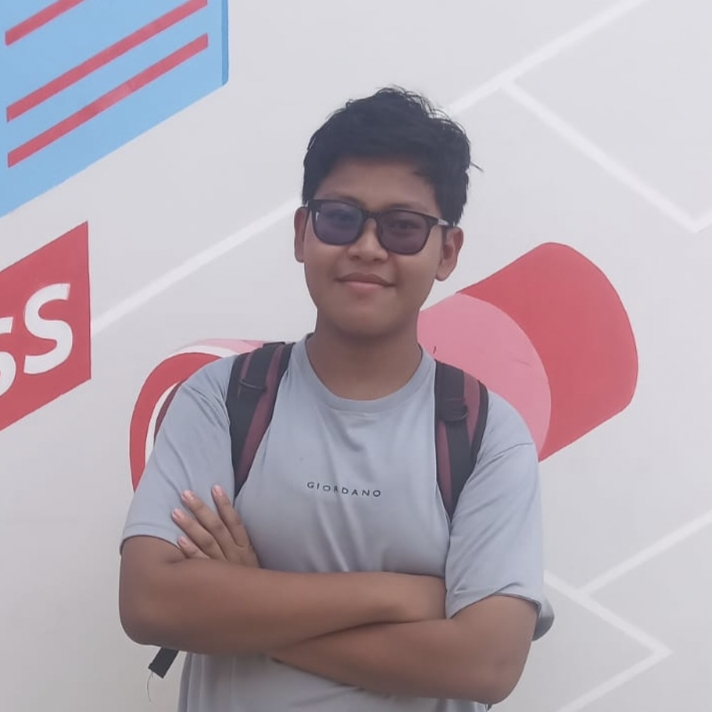
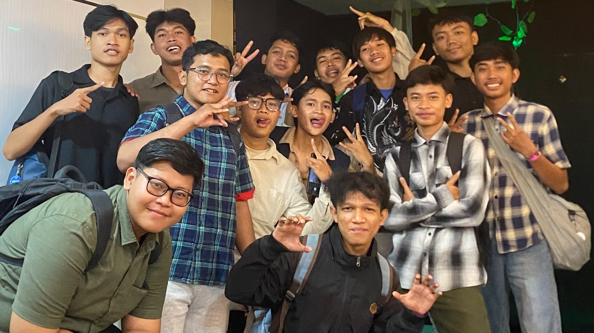
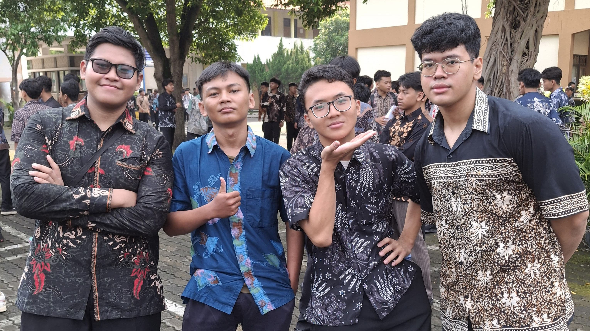
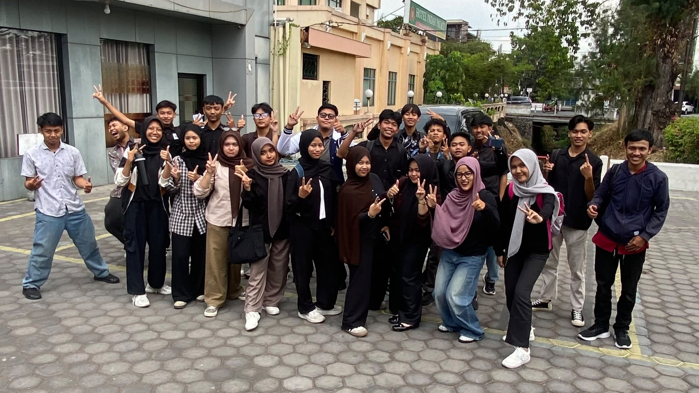
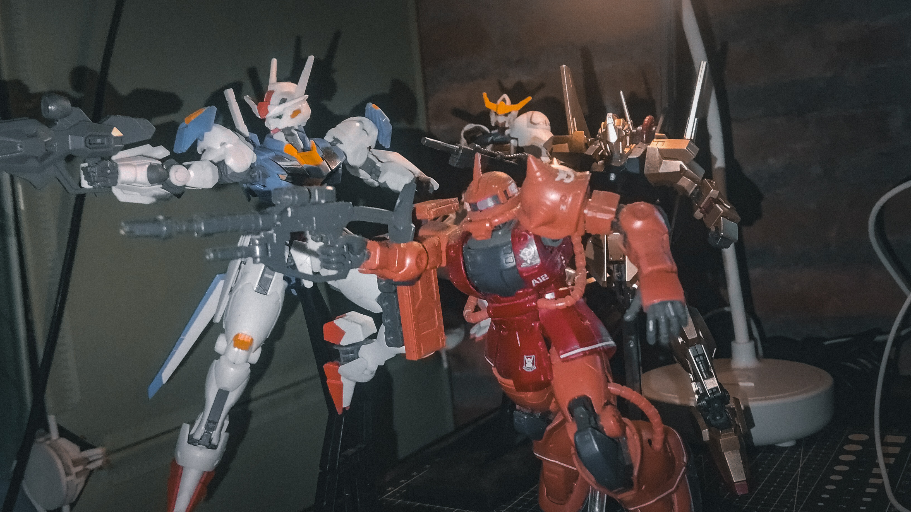
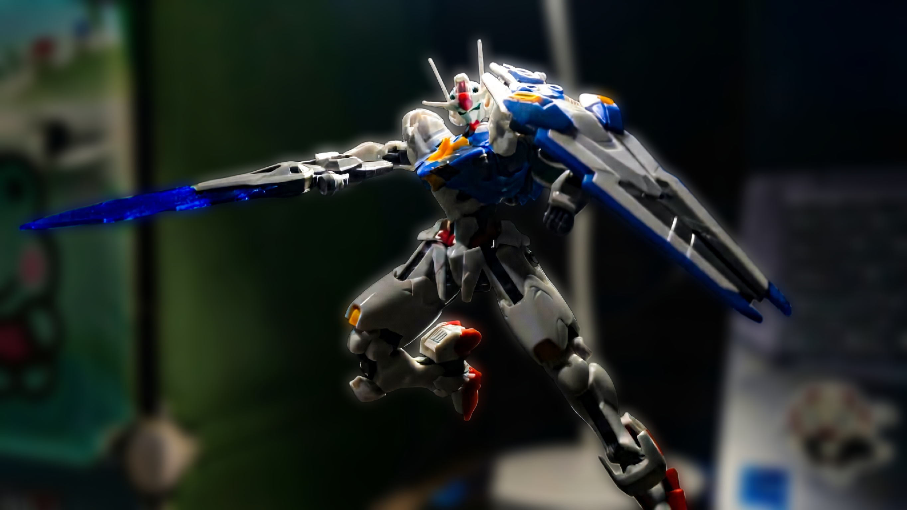
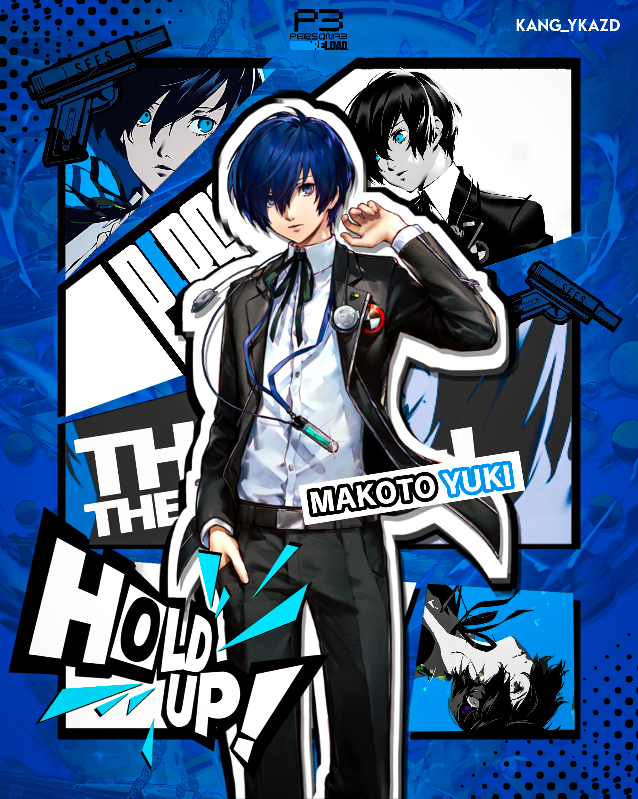
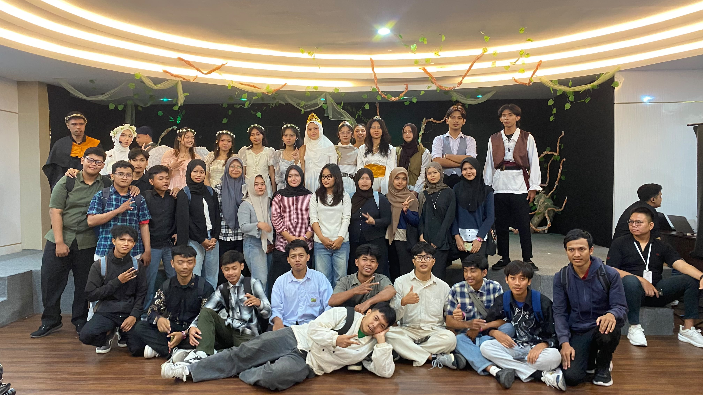
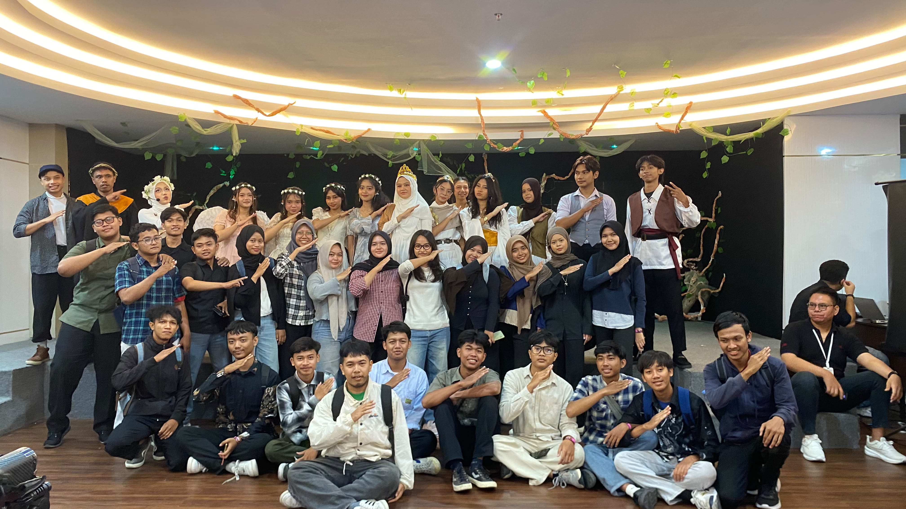

DZAKY
GUNDAM & CREATIVE EXPLORER
"Always do good, whenever and wherever"

I live in Surakarta and am a student at FIKOM UDB Surakarta with a passion for design, web development, and all things tech-related. My hobbies include listening to music, drawing, watching movies and anime, creating anime GFX designs, and building Gundam models.






Documentation
The drama A Midsummer Night's Dream


The drama A Midsummer Night's Dream tells a story about love, friendship, and magic. This story is about four young people. Two young people fall in love with the wrong person because of magic. The four young people are Hermia, Lysander, Demetrius, and Helena.
MY FAVORITE CHARACTER
Among the entire cast of characters in this stage play, the character that intrigues me the most is Oberon, the King of the Fairies. Oberon fascinates me because of his multi-dimensional personality as well as his dual character because he is an authoritative and proud king who, at times, is manipulative and vengeful but, in reality, has a heart that is benevolent. While Oberon is initially jealous of Titania and uses the magical flower to take revenge on her for this reason, he expresses pity when he learns that Demetrius is being mean to Helena and directs Puck to make the young man’s heart feel better. Once he achieves his objective, Oberon behaves magnanimously by removing the spell from Titania and ensuring that all the mortal lovers unite into happy pairs.
MY FAVORITE SCENE
The best scene of the entire show in my opinion is Act 2, Scene 1, when Oberon stealthily hides in the woods to listen to the quarrel that Demetrius and Helena have. When Demetrius rejects Helena in such an unfriendly way, Oberon observes the entire scene with sympathy towards Helena's plight. The reason why I find this scene so intriguing is because it shows Oberon's sympathetic side even though he is a regal character. The spontaneous idea of Oberon to act upon the situation by using the magic potion on Demetrius is the start of the main romantic entanglements in the play.